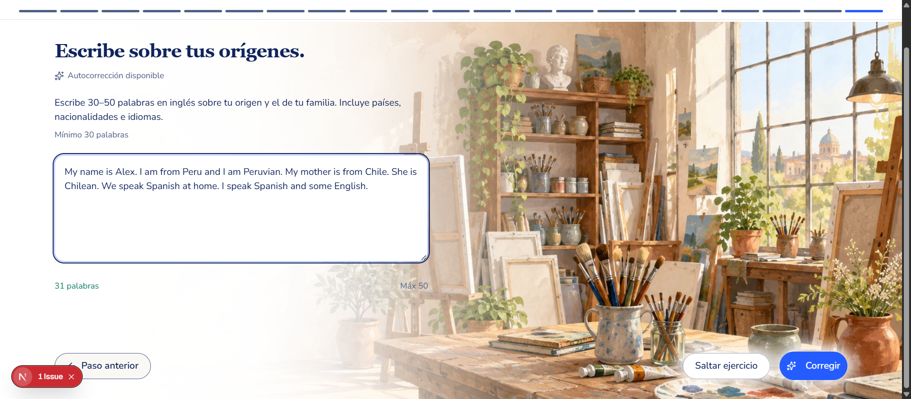
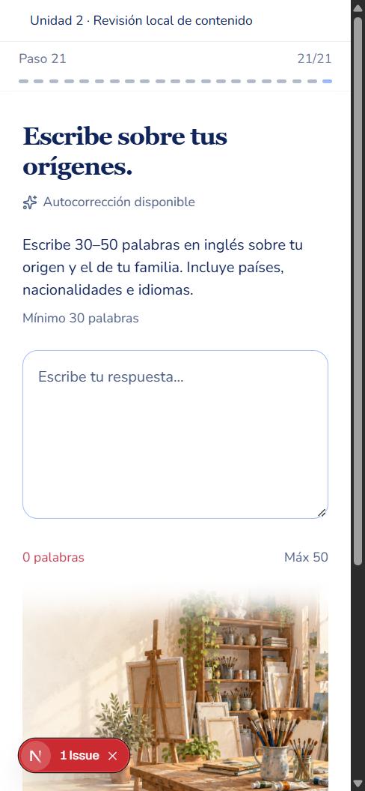
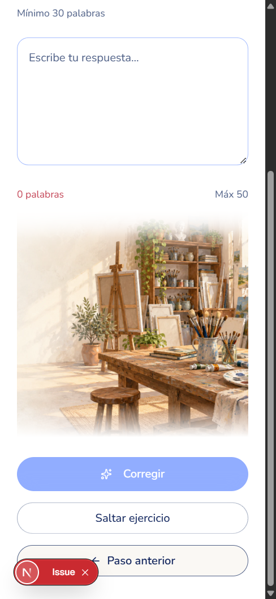
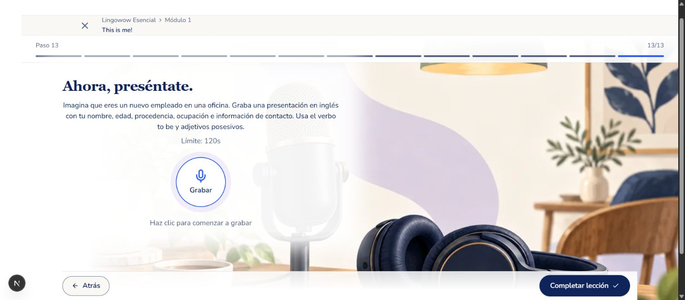
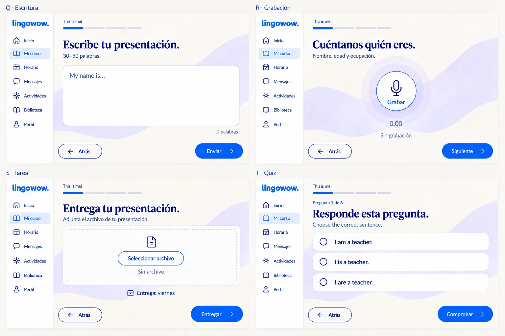
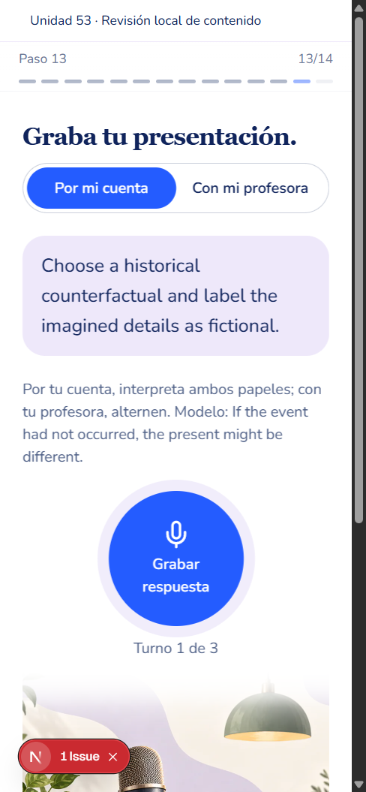
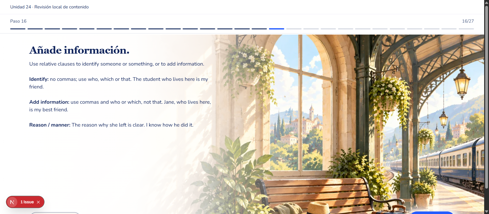
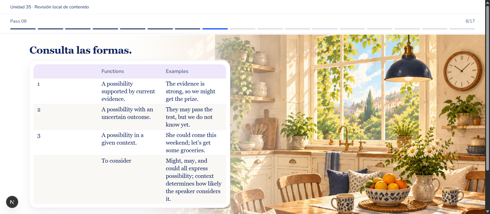
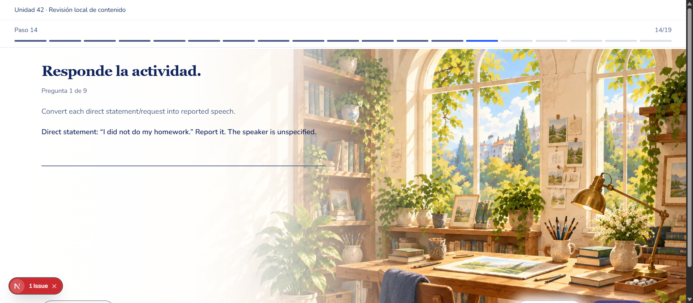

Pedagogical corrections: visual acceptance
Approved guide: graphic-guide-v1/README.md; v3 Language and Production; later full-canvas, readable-skip and circular-microphone instructions take precedence over older controls visible in reference screenshots.
Scope: data-only course corrections. Existing renderer and CSS unchanged. Authored scene assets, character identity/side, audio URLs and transcripts are preserved by recursive validation. Converted essays use the existing writing renderer, which may choose its existing writing setting.
Recorded contract: complete illustrated setting; white fade; one task heading; existing spacing/control shape; one grading action with separate skip; readable responsive layout. Runtime samples retain the complete lesson inventory, so backgrounds and step grouping use actual course data. Standalone QA header replaces the application shell only for these local captures; no QA route is shipped.
Evidence: 9 actual captures, including blank/ready writing and desktop/mobile. The 31-word fictional sample only enabled Corregir; no AI grading was submitted. No microphone was activated, permission accepted or audio uploaded. Next.js issue badges are local development overlays, not student-facing production controls.
Mobile captures use a real 390×844 CSS viewport, with a 15px scrollbar and OS device scale factor 1.25; exported pixels differ accordingly. Native thumbnails that failed to capture mobile reflow were replaced with direct, unedited Chrome render captures. Desktop captures retain native pixel dimensions; comparison panels scale references and actual images uniformly for inspection.
Limits: representative data states, not every scene in all 56 units. Tables and long pages scroll; some viewport captures omit the footer. Mobile writing footer has a separate capture. Teacher-mode grading, microphone permissions and AI feedback were not exercised by this read-only visual QA. This report does not certify student learning outcomes.
Technical validation and dev application status are recorded separately in acceptance-summary.json.
Writing: prompt and textarea
Approved composition reference Actual renderer — local QA, existing course components
Actual renderer — local QA, existing course components Pass for captured state: environment remains complete, white fade keeps text legible, task hierarchy and existing controls remain in place. No CSS or replacement artwork was introduced.
Writing: 31 words enable one correction action
Approved composition referenceActual renderer — local QA, existing course components
Pass for captured state: environment remains complete, white fade keeps text legible, task hierarchy and existing controls remain in place. No CSS or replacement artwork was introduced.
Writing mobile: readable prompt, limits and textarea
Approved composition reference Actual renderer — local QA, existing course components
Actual renderer — local QA, existing course components
Pass for captured state: environment remains complete, white fade keeps text legible, task hierarchy and existing controls remain in place. No CSS or replacement artwork was introduced.
Writing mobile: full setting and separated correction/skip
Approved composition referenceActual renderer — local QA, existing course components
Pass for captured state: environment remains complete, white fade keeps text legible, task hierarchy and existing controls remain in place. No CSS or replacement artwork was introduced.
Conversation: 3 turns, dual-mode scaffold, circular recording control
Approved composition reference
Actual renderer — local QA, existing course components Pass for captured state: environment remains complete, white fade keeps text legible, task hierarchy and existing controls remain in place. No CSS or replacement artwork was introduced.
Conversation mobile: readable turn and circular control
Approved composition reference
Actual renderer — local QA, existing course components
Pass for captured state: environment remains complete, white fade keeps text legible, task hierarchy and existing controls remain in place. No CSS or replacement artwork was introduced.
Relative clauses: concise examples in the full illustrated setting
Approved composition reference Actual renderer — local QA, existing course components
Actual renderer — local QA, existing course components
Pass for captured state: environment remains complete, white fade keeps text legible, task hierarchy and existing controls remain in place. No CSS or replacement artwork was introduced.
Probability: contextual models, not a fixed modal ranking
Approved composition referenceActual renderer — local QA, existing course components
Pass for captured state: environment remains complete, white fade keeps text legible, task hierarchy and existing controls remain in place. No CSS or replacement artwork was introduced.
Reported speech: the question includes the direct statement
Approved composition reference Actual renderer — local QA, existing course components
Actual renderer — local QA, existing course components
Pass for captured state: environment remains complete, white fade keeps text legible, task hierarchy and existing controls remain in place. No CSS or replacement artwork was introduced.